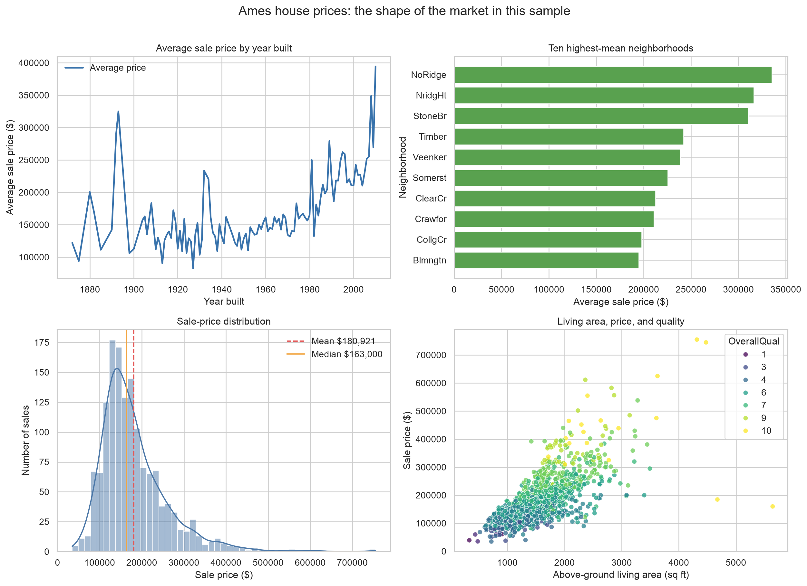

The clearest pattern is simple: better overall quality and more living space tend to go with higher sale prices. But prices vary widely, neighborhoods differ, and a handful of unusual homes remind us that a single feature never tells the whole story.
Average: $180,921
81 columns describing each sale
The full picture
Each panel adds a different angle: when homes were built, the neighborhoods with the highest average prices, the uneven price distribution, and how living area and quality line up with sale price.

The figures describe this historical sample; they are not a current home valuation.
What stands out
Price has a long upper tail
The median is about $17,900 below the average, because a small number of expensive homes pull the average upward. A log transform makes the distribution much more balanced.
Quality and space move with price
Overall quality has the strongest numeric correlation with price (0.79), followed by above-ground living area (0.71). Prices generally climb across quality grades.
Neighborhoods differ
The highest neighborhood median is $315,000 in NridgHt, followed by $301,500 in NoRidge and $278,000 in StoneBr. Individual homes can still sit far from those medians.
Unusual does not mean erroneous
Two homes exceed 4,600 square feet but sold below $185,000. They are worth noticing, but the records are not obviously invalid, so they remain in the analysis.
A note about missing values
Many blanks mean a home simply had no pool, alley, fence, fireplace, garage, or basement feature. Those are treated as “None.” Garage construction year stays blank where no garage exists; filling in a year would invent information.
Explore the work
The notebook contains the step-by-step analysis, tables, charts, and code. The CSV is included so the notebook can be rerun.
Dataset: Kaggle House Prices: Advanced Regression Techniques, training set. The included CSV is a public mirror of that dataset. This is an exploratory analysis only; no machine-learning model is used.